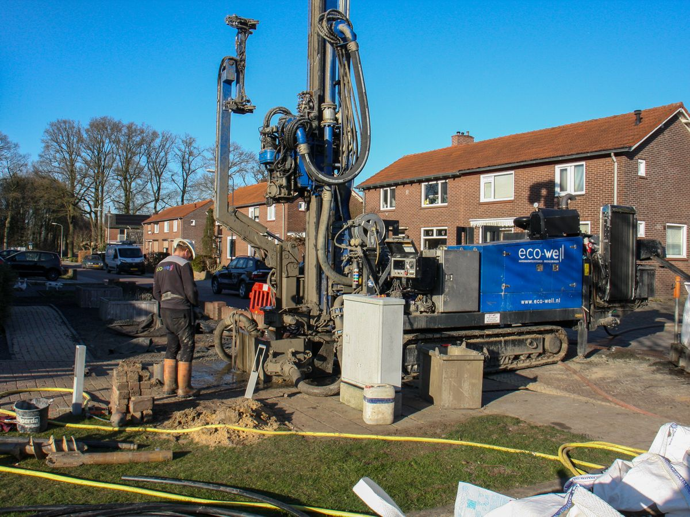
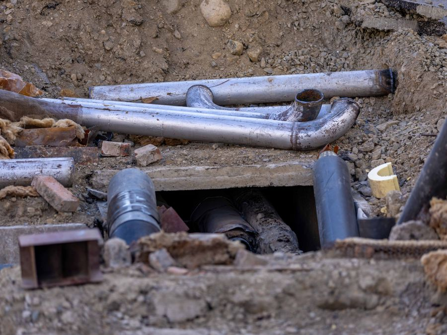
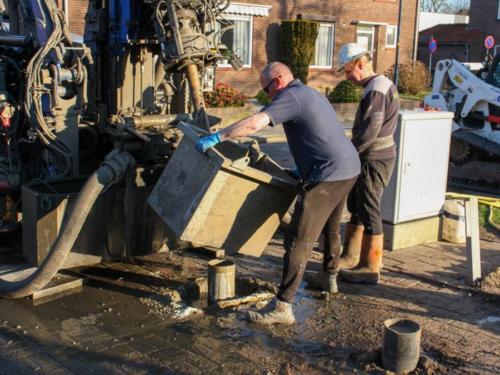
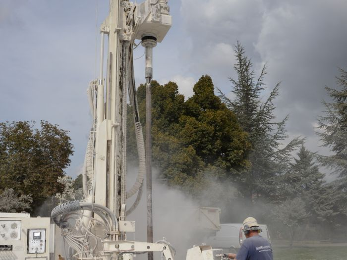
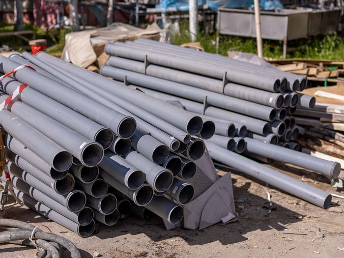
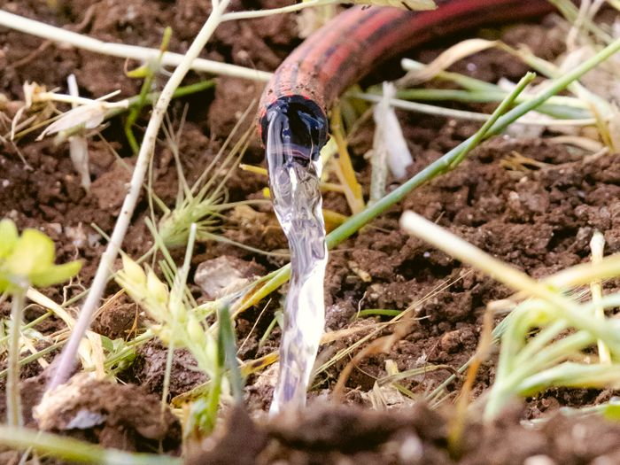
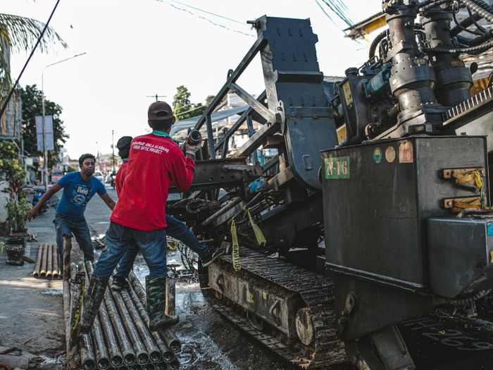

Vŕtam studne a pretláčam prípojky popod cesty.
Vlastná voda na pozemku alebo prípojka pod cestou, chodníkom či trávnikom — bez rozkopávky. Šurany a okolie.
Remeslo, ktoré mi odovzdal otec a starý otec.
Zavolať 0948 484 513 Zavolajte a povedzte, čo potrebujete. Poradím aj po telefóne.
Vŕtanie studní
Pre dom, záhradu alebo hospodárstvo. Vŕtam do hĺbky 80 m, priemery 140, 160, 200, 250, 315 a 400 mm. Robím aj trativody na dažďovú vodu.
V cene je zahrnuté:
- Rúra (pažnica)
- Perforácia
- Čerpacia skúška
- Prečistenie vrtu
Rez zemou: vrt prechádza vrstvami až do zvodnenej vrstvy. Hĺbka do 80 m.
Kde vŕtam
Južné a západné Slovensko. Ak vaša obec v zozname nie je, zavolajte — povieme si, či to vyjde.
Pretláčanie pod cesty
Prípojku plynu, vody, elektriny alebo kábla dostanem popod cestu, chodník, koľaje či trávnik bez toho, aby sa museli rozkopať.
Parametre
Čo zabezpečíte vy
- Vytýčenie a vysondovanie vedení, ktoré sa križujú s pretlakom.
- Výkop štartovacej a cieľovej jamy — dohodou.

Chránička vedená popod spevnenú plochu — povrch zostal celý.
Ako to prebieha
Zavoláte
Poviete, čo potrebujete a kde. Základné veci si vyjasníme hneď po telefóne.
Obhliadka
Pozriem pozemok, prístup pre súpravu a dohodneme miesto vrtu alebo jám.
Vŕtanie
Prídem s vrtnou súpravou, vyvŕtam a osadím pažnicu s perforáciou.
Skúška a odovzdanie
Čerpacia skúška, prečistenie vrtu a odovzdanie hotovej studne.
Fotky z práce





Fotografie sú ilustračné (voľná licencia). V ostrej verzii sem prídu vlastné zábery z realizácií.
Nechajte mi číslo, zavolám späť
Stačia štyri údaje.